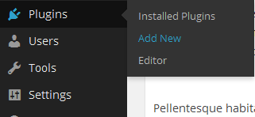

KB Addon For WP Bakery Page Builder - -
Last Edited: -
Created: 15/02/2016
By: Mahbub Alam Khan
Support:
Send
Email
Web Site:
bluewindlab.net
Thank you for purchasing KB Addon For WP Bakery Page Builder.
If you like this plugin, feel free to rate it five stars at CodeCanyon downloads section.
If you encounter any problems please do not give a low rating but
contact me
first. So I can help you.
Thank You!
Plugin Overview
The most powerful and unique KB Addon For WP Bakery Page Builder to create a KB page for your site within few minutes. Addon comes with 7 custom WPBakery Page Builder block that allows you to create custom KB layouts very quickly. Each block has drag & drop powered sorting option. So, you can easily manage KB categories, tags and tabs according to your requirements.
Addon also gives you the front end editing feature. That's why you can also manage KB contents from front end of your site. Here goes the full feature lists of Addon-
Features
- Work with latest WordPress & WPBakery Page Builder Plugin.
- Knowledge Base Category Block.
- Knowledge Base Tags Block.
- Knowledge Base Tabs Block.
- Knowledge Base Search Block.
- Knowledge Base External Question Block.
- Knowledge counter block.
- Knowledge Ask A Question Button Block.
- Front end editing with WPBakery Page Builder.
- Quick installation and super easy to use.
- Extensive Documentation.
- 6 Months premium support & Free Lifetime updates.
Requirements
You need at least WordPress version 4.8+ installed for this plugin to work properly. It is strongly recommended that you always use the latest stable version of WordPress to ensure all known bugs and security issues are fixed.
You need to install WPBakery Page Builder & BWL Knowledge Base Manager to use "KB Addon For WP Bakery Page Builder".
Other requirements:
- PHP version 7.4 or greater.
- MySQL version 5.5.51 or greater.
B. Installation: - top
- Steps:
- Go to plugins section in your wordpress admin panel and click
Add New
to install plugin.
 - Now, upload the "kb-addon-for-visual-composer.zip" file.
- Once plugin successfully uploaded in your server you will get an message to activate it. Click on "Activate Plugin" Link and plugin will be ready to use.
- After activating plugins, you will redirect in plugins section of wp-admin panel and
show new installed plugins information in there.

How To Operate Plugin
- Once installation has been completed successfully, Addon automatically add a new menu(BWL KB) in visual composer "Content" section.

- Knowledge base Addon Blocks:
01. Knowledge Base Category Block:
01.1 Knowledge Base Category Settings Block:

02. Knowledge Base Tags Block:
03. Knowledge Base Tab Block:

04. Knowledge Base Search Block:

05. Knowledge Base External Question Block:
06. Knowledge Base Counter Block:

07. Knowledge Base Question Modal Button Block:

08. Knowledge Base Recent/Popular/Featured Posts Block:

- Now you can also edit KB content using front end editor.

Translate Plugin Layouts
Recaptcha Addon Pro Voting Manager offers translation feature, and you can easily translate the plugin to any language. Check following steps.
- Step 01: Go to the plugins/bpvm-recaptcha-addon folder. Inside the "languages" folder, you will get a file named "bpvm-recaptcha-addon.pot" file. To edit this file you need to install "poedit" software in your computer.
- Step 02: Our Plugin text-domain is 'bpvm-recap'. For example- we want to translate plugin in to "German" language. So,".po" file name will be "bpvm_wpva-de_DE.po". That's all.
Upgrade Notes
Important Note:
If you modified any files of plugin, please take a backup before update all files and folder. We highly recommend to take backup of language files.
Change Log
2024, December, 10 - v 1.1.5
- Updated: Plugin for WordPress 6.7.1
- Updated: Plugin language/translation file.
- Updated: Addon documentation.
2024, July, 16 - v 1.0.8
- Updated: Addon code.
- Updated: Addon documentation.
2018, April, 13 - v 1.0.7
- Added extra class insert option with every block.
- Added animation option with every block.
- Improved Addon for VC latest version.
- Improved language file.
- Improved documentation.
2017, May, 11 - v 1.0.6
- Added Recent/Popular/Featured Posts Block.
- Improved language file.
- Improved Addon for VC latest version.
- Improved documentation.
2017, April, 20 - v 1.0.5
- Added 3 column layout options for boxed layout.
- Added option show total post count below the link.
- Improved Addon for VC latest version.
- Improved documentation.
2017, January, 16 - v 1.0.4
- Added "KB Modified By Date" sorting option in category and tag VC block.
- Added option to add custom text for KB Featured/Popular/Recent Tab.
- Improved Addon for VC latest version.
- Improved documentation.
2016, October, 05 - v 1.0.3
- Fixed order by title issue.
- Fixed admin panel broken KB column layout issue.
- Update documentation.
2016, July, 23 - v 1.0.2
- Fixed counter block title and icon issue.
- Update Language File.
- Update documentation.
2016, June, 05 - v 1.0.1
- Added Knowledge base counter block.
- Added Ask A Question Modal Button Block.
- Added Vertial Tab Feature.
- Improved Addon Performance.
- Update Language File.
- Update documentation.
2016, February, 15 - v 1.0.0
- Initial release